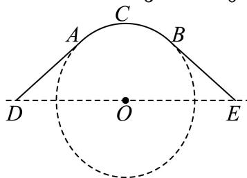

填空题 按本区原卷题号顺序排列。
嘉定 · 第1题 ★☆☆☆☆ · 教师预估 函数 y = log 2 ( x 2 − 1 ) y = \log _ { 2 } ( x ^ { 2 } - 1 ) y = log 2 ( x 2 − 1 )
嘉定 · 第2题 ★☆☆☆☆ · 教师预估 直线3x − y + 1 = 0的倾斜角为 .（用反三角函数表示）
嘉定 · 第3题 ★☆☆☆☆ · 教师预估 本题资料或解析有待核事项，预览不可作为已审定成品。
如果复数 z z z i z ‾ = 1 + 2 i \mathrm i\,\overline z=1+2\mathrm i i z = 1 + 2 i i \mathrm i i z = z= z =
嘉定 · 第4题 ★☆☆☆☆ · 教师预估 本题资料或解析有待核事项，预览不可作为已审定成品。
在 △ A B C ′ \triangle A B C ^ { \prime } △ A B C ′ A B = 5 , B C = 21 , C A = 4 A B = 5 , B C = { \sqrt { 2 1 } } , C A = 4 A B = 5 , BC = 21 , C A = 4
嘉定 · 第5题 ★☆☆☆☆ · 教师预估 已知双曲线C ： x 2 3 − y 2 2 = 1 { \frac { x ^ { 2 } } { 3 } } - { \frac { y ^ { 2 } } { 2 } } = 1 3 x 2 − 2 y 2 = 1 C 的离心率是
嘉定 · 第6题 ★☆☆☆☆ · 教师预估 已知圆锥的母线长为2，底面半径为1，则圆锥的侧面积为
嘉定 · 第7题 ★★☆☆☆ · 教师预估 本题资料或解析有待核事项，预览不可作为已审定成品。
在 ( x − 1 x ) \left( x - { \frac { 1 } { x } } \right) ( x − x 1 ) x 3 x ^ { 3 } x 3
嘉定 · 第8题 ★★☆☆☆ · 教师预估 已知数列 { a n } \left\{ a _ { n } \right\} { a n } ∣ a n = − n + c , \begin{array} { r } { | a _ { n } = - n + c , } \end{array} ∣ a n = − n + c , { a n } \left\{ a _ { n } \right\} { a n } S n S _ { n } S n S 6 > S 5 S _ { 6 } > S _ { 5 } S 6 > S 5 S 6 > S 7 S _ { 6 } > S _ { 7 } S 6 > S 7
嘉定 · 第9题 ★★★☆☆ · 教师预估 已知 f ( x ) = ln ( x + 1 ) , g ( x ) = { f ( x ) , x ≥ 0 f ( − x ) , x < 0 , f \left( x \right) = \ln { \left( x + 1 \right) } , g \left( x \right) = \left\{ { f \left( x \right) } , x \geq 0 \atop f \left( - x \right) , x < 0 , \right. f ( x ) = ln ( x + 1 ) , g ( x ) = { f ( − x ) , x < 0 , f ( x ) , x ≥ 0 ∣ g ( x ) > x + 2 − \mid g ( x ) > x + 2 - ∣ g ( x ) > x + 2 −
嘉定 · 第10题 ★★★☆☆ · 教师预估 本题资料或解析有待核事项，预览不可作为已审定成品。
已知空间向量 O B 1 → , O B 2 → , O B 3 → \overrightarrow { O B _ { 1 } } , \overrightarrow { O B _ { 2 } } , \overrightarrow { O B _ { 3 } } O B 1 , O B 2 , O B 3 ∣ A B 1 → ∣ = ∣ A B 2 → ∣ = ∣ A B 3 → ∣ = 1 \left| \overrightarrow { A B _ { 1 } } \right| = \left| \overrightarrow { A B _ { 2 } } \right| = \left| \overrightarrow { A B _ { 3 } } \right| = 1 A B 1 = A B 2 = A B 3 = 1 O P → = O B 1 → + O B 2 → + O B 3 → \overrightarrow { O P } = \overrightarrow { O B _ { 1 } } + \overrightarrow { O B _ { 2 } } + \overrightarrow { O B _ { 3 } } OP = O B 1 + O B 2 + O B 3 ∣ ⟶ A P ⃗ ∣ ≤ 1 \left| \begin{array} { l } { \longrightarrow } \\ { \vec { A P } } \end{array} \right| \le 1 ⟶ A P ≤ 1 O A → \overrightarrow { O A } O A
嘉定 · 第11题 ★★★★☆ · 教师预估 本题资料或解析有待核事项，预览不可作为已审定成品。
某公园为了美化环境，计划建造一座拱桥 D A C B E DACBE D A CBE A C B ^ \widehat{ACB} A CB A D , B E AD,BE A D , BE A C B ^ \widehat{ACB} A CB O O O D E DE D E A D AD A D B E BE BE O O O A A A B B B A C B ^ \widehat{ACB} A CB ∠ A D O = θ \angle ADO=\theta ∠ A D O = θ θ \theta θ arcsin 1 3 ≤ θ ≤ π 6 \arcsin\frac13\le\theta\le\frac\pi6 arcsin 3 1 ≤ θ ≤ 6 π θ \theta θ

嘉定 · 第12题 ★★★★☆ · 教师预估 本题资料或解析有待核事项，预览不可作为已审定成品。
已知实数 [ x 1 , x 2 , y 1 , y 2 \left[ x _ { 1 } , x _ { 2 } , y _ { 1 } , y _ { 2 } \right. [ x 1 , x 2 , y 1 , y 2 x 1 2 + y 1 2 = 1 , x 2 2 + y 2 2 = 1 , x 1 x 2 + y 1 y 2 = 1 2 x _ { 1 } ^ { 2 } + y _ { 1 } ^ { 2 } = 1 , x _ { 2 } ^ { 2 } + y _ { 2 } ^ { 2 } = 1 , x _ { 1 } x _ { 2 } + y _ { 1 } y _ { 2 } = { \frac { 1 } { 2 } } x 1 2 + y 1 2 = 1 , x 2 2 + y 2 2 = 1 , x 1 x 2 + y 1 y 2 = 2 1 ∣ x 1 + y 1 − 1 ∣ 2 + ∣ x 2 + y 2 − 1 ∣ 2 { \frac { | x _ { 1 } + y _ { 1 } - 1 | } { \sqrt { 2 } } } + { \frac { | x _ { 2 } + y _ { 2 } - 1 | } { \sqrt { 2 } } } 2 ∣ x 1 + y 1 − 1∣ + 2 ∣ x 2 + y 2 − 1∣
选择题 按本区原卷题号顺序排列。
嘉定 · 第13题 ★★☆☆☆ · 教师预估 已知a为正数，则 ∗ a > 3 ∗ ^ { * } a > 3 ^ { * } ∗ a > 3 ∗ a a > a 3 , { } ^ { } a ^ { a } > a ^ { 3 } { } ^ { , } a a > a 3 ,
A. 充分非必要条件
B. 必要非充分条件
C. 充要条件
D. 既非充分也非必要条件
嘉定 · 第14题 ★★☆☆☆ · 教师预估 已知α,β是两个不同的平面，a，b是两条不同的直线，下列条件中，一定得到直线l⊥α的是（ ）
A. α ⊥ β , l / / β \alpha \perp \beta , l / / \beta α ⊥ β , l // β
B. l ⊥ a , a / / α l \perp a , a / / \alpha l ⊥ a , a // α
C. l / / a , a ⊥ α l / / a , a \bot \alpha l // a , a ⊥ α
D. l ⊥ a , l ⊥ b , a ⊂ α , b ⊂ α l \bot a , l \bot b , a \subset \alpha , b \subset \alpha l ⊥ a , l ⊥ b , a ⊂ α , b ⊂ α
嘉定 · 第15题 ★★★☆☆ · 教师预估 假定生男生女是等可能的，设事件A：一个家庭中既有男孩又有女孩；事件B:一个家庭中最多有一个女孩.针对下列两种情形：①家庭中有2个小孩；②家庭中有3个小孩，下面说法正确是（ ）.
A. ①中事件A与事件B相互独立､②中的事件A与事件B相互独立
B. ①中事件A与事件B不相互独立､②中的事件A与事件B相互独立
C. ①中事件A与事件B相互独立､②中的事件A与事件B不相互独立
D. ①中事件A与事件B不相互独立､②中的事件A与事件B不相互独立
嘉定 · 第16题 ★★★★☆ · 教师预估 本题资料或解析有待核事项，预览不可作为已审定成品。
已知数列 { a n } \left\{ a _ { n } \right\} { a n } a n + 1 = r a n ( 1 − a n ) ( n = 1 , 2 , 3 , ⋅ ⋅ ⋅ ) , a 1 ∈ ( 0 , 1 ) a _ { n + 1 } = r a _ { n } \left( 1 - a _ { n } \right) ( n = 1 , 2 , 3 , \cdot \cdot \cdot ) , a _ { 1 } \in ( 0 , 1 ) a n + 1 = r a n ( 1 − a n ) ( n = 1 , 2 , 3 , ⋅ ⋅ ⋅ ) , a 1 ∈ ( 0 , 1 ) a ˙ 1 \mathbf { \dot { a } } _ { 1 } a ˙ 1 ⋅ n , ⋅ ^ { \cdot _ { n , \cdot } } ⋅ n , ⋅ a n + 1 > a n a _ { n + 1 } > a _ { n } a n + 1 > a n ( a 1 \scriptstyle ( a _ { 1 } ( a 1 n > P H ] n > P \mathbb { H } ] n > P H ] a n + 1 − a n < 1 2025 a _ { n + 1 } - a _ { n } < { \frac { 1 } { 2 0 2 5 } } a n + 1 − a n < 2025 1 P , P , P , n > P k n > P \mathbb { k } n > P k a n + 1 = a n a _ { n + 1 } = a _ { n } a n + 1 = a n . n ≥ 3 . n \geq 3 . n ≥ 3 a ˙ n > 0 \dot { a } _ { n } > 0 a ˙ n > 0
A. ①②
B. ②③
C. ③④
D. ②④
解答题 按本区原卷题号顺序排列。
嘉定 · 第17题 ★★★☆☆ · 教师预估 如图所示，在三棱柱 A B C − A 1 B 1 C 1 A B C - A _ { 1 } B _ { 1 } C _ { 1 } A BC − A 1 B 1 C 1 A B = A C A B = A C A B = A C B B 1 C 1 C ⊥ B B _ { 1 } C _ { 1 } C \bot B B 1 C 1 C ⊥ A 1 C 1 A _ { 1 } C _ { 1 } A 1 C 1 △ A B C \triangle A B C △ A BC C C 1 = B C C C _ { 1 } = B C C C 1 = BC C C 1 C C _ { 1 } C C 1 6 0 ∘ 6 0 ^ { \circ } 6 0 ∘ A B C − A 1 B 1 C 1 A B C - A _ { 1 } B _ { 1 } C _ { 1 } A BC − A 1 B 1 C 1 E F / / E F / / EF // A A 1 B 1 B ⋅ A A _ { 1 } B _ { 1 } B _ { \cdot } A A 1 B 1 B ⋅
嘉定 · 第18题 ★★★★☆ · 教师预估 本题资料或解析有待核事项，预览不可作为已审定成品。
已知 f ( x ) = 2 cos ( ω x + 3 π 4 ) f \left( x \right) = 2 \cos { \left( \omega x + \frac { 3 \pi } { 4 } \right) } f ( x ) = 2 cos ( ω x + 4 3 π ) ι ω > 0 \iota _ { \omega } > 0 ι ω > 0 ω = 2，求函数 ⟨ y = f ( x ) , x ∈ [ − π 4 , π 4 ] \langle y = f ( x ) , x \in \left[ - \frac { \pi } { 4 } , \frac { \pi } { 4 } \right] ⟨ y = f ( x ) , x ∈ [ − 4 π , 4 π ] f ( π 4 ) = 0 f \left( { \frac { \pi } { 4 } } \right) = 0 f ( 4 π ) = 0 { y = f ( x ) \{ y = f ( x ) { y = f ( x ) ( π 4 , π 3 ) \left( { \frac { \pi } { 4 } } , { \frac { \pi } { 3 } } \right) ( 4 π , 3 π )
嘉定 · 第19题 ★★★☆☆ · 教师预估 在一场盛大的电竞比赛中，有两支实力强劲的队伍甲和乙进行对决.比赛采用5局3胜制，最终的胜者将赢得10万元奖金，比赛过程中，每局比赛双方获胜的概率相互独立且甲队每局获胜概率为0.4，乙队每局获胜概率为0.6.比赛开始后，甲队先连胜两局，此时，主办方记录了两队队员在这两局比赛中的一些数据.甲队队员的击杀数（单位：个）数据如下：24, 31, 31, 36, 36, 37, 39, 44, 49, 50；乙队队员的击杀数（单位：个）数据如下：8,13,14,16,23,26,28,33,38,39.然而此时比赛场地突发技术故障，比赛不得不中止.请回答以下问题：
嘉定 · 第20题 ★★★★☆ · 教师预估 在平面直角坐标系 x O y ⊞ x O y \boxplus x O y ⊞ x 2 5 + y 2 4 = 1 , F 1 , F 2 \frac { x ^ { 2 } } { 5 } + \frac { y ^ { 2 } } { 4 } = 1 , F _ { 1 } , F _ { 2 } 5 x 2 + 4 y 2 = 1 , F 1 , F 2 F 2 F _ { 2 } F 2 分 )若 − P F 1 → ⋅ P F 2 → = 3 \overrightarrow { P F _ { 1 } } \cdot \overrightarrow { P F _ { 2 } } = 3 P F 1 ⋅ P F 2 = 3 △ F 1 P Q \triangle F _ { 1 } P Q △ F 1 PQ 40 21 \frac { 4 0 } { 2 1 } 21 40 k O M ⋅ k A B = k O A ⋅ k O B k _ { O M } \cdot k _ { A B } = k _ { O A } \cdot k _ { O B } k OM ⋅ k A B = k O A ⋅ k OB △ O A \triangle O A △ O A
嘉定 · 第21题 ★★★★☆ · 教师预估 本题资料或解析有待核事项，预览不可作为已审定成品。
设A为非空集合，函数f (x)的定义域为D.若存在 Φ x 0 ∈ D \mathbf { \Phi } _ { \boldsymbol { x } _ { 0 } } \in \mathbf { D } Φ x 0 ∈ D f ( x ) − f ( x 0 ) ∈ A f \left( x \right) - f \left( x _ { 0 } \right) \in \mathrm { A } f ( x ) − f ( x 0 ) ∈ A 0 )为函数f(x)的一个A值，x0 为相应的A值点.A = [ − 2 , 0 ] , f ( x ) = sin x A = [ - 2 , 0 ] , f ( x ) = \sin x A = [ − 2 , 0 ] , f ( x ) = sin x x 0 = 2 k π + 1 2 π , k ∈ Z x _ { 0 } = 2 k \pi + \frac { 1 } { 2 } \pi , k \in { \bf Z } x 0 = 2 kπ + 2 1 π , k ∈ Z A = [ 0 , + ∞ ) , f ( x ) = − x , g ( x ) = x 2 + x + 1 A = [ 0 , + \infty ) , f ( x ) = - x , g ( x ) = x ^ { 2 } + x + 1 A = [ 0 , + ∞ ) , f ( x ) = − x , g ( x ) = x 2 + x + 1 ∇ f ( x ) , g ( x ) { \bf \nabla } f \left( x \right) , g \left( x \right) ∇ f ( x ) , g ( x ) A = ( − ∞ , 0 ] A = ( - \infty , 0 ] A = ( − ∞ , 0 ] f ( x ) = ln x + a x 2 ( a ∈ R ) f \left( x \right) = \ln x + a x ^ { 2 } \left( a \in \mathbf { R } \right) f ( x ) = ln x + a x 2 ( a ∈ R )